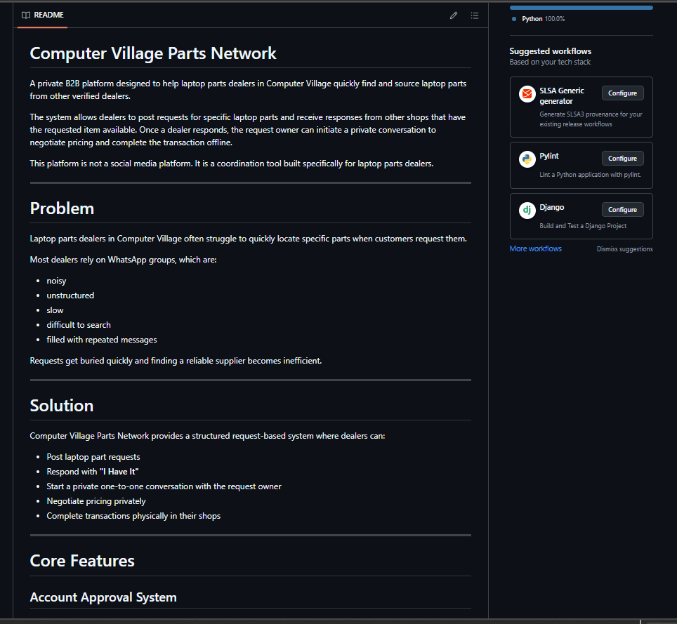
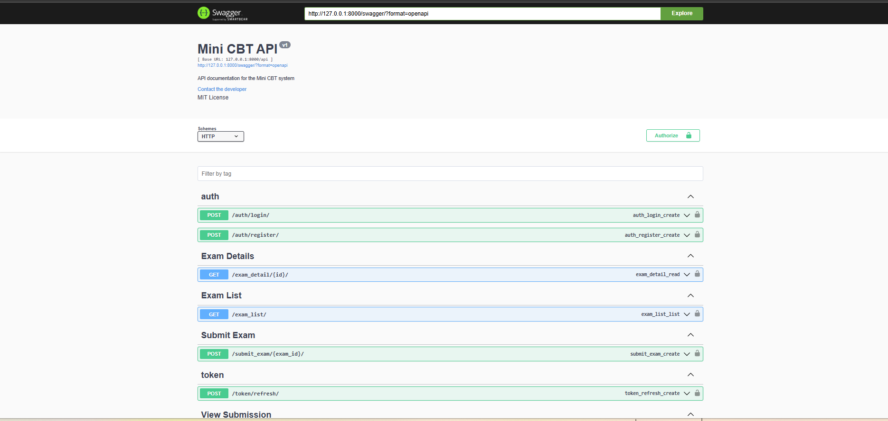
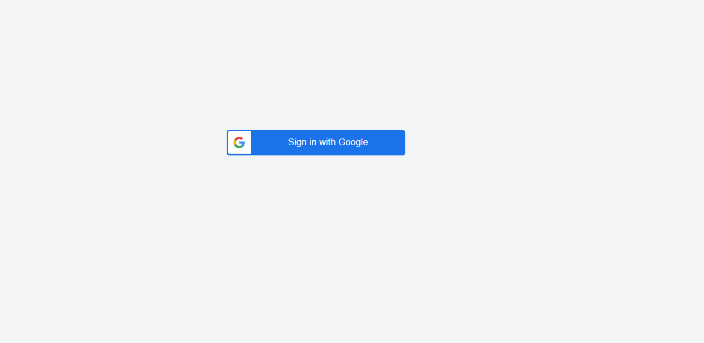
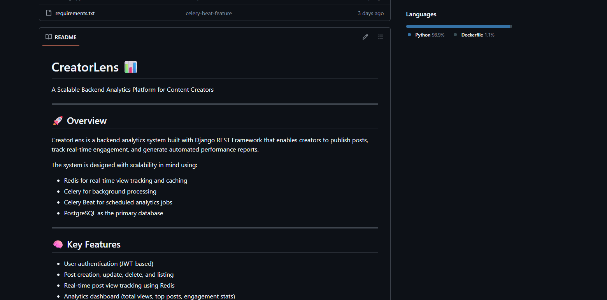
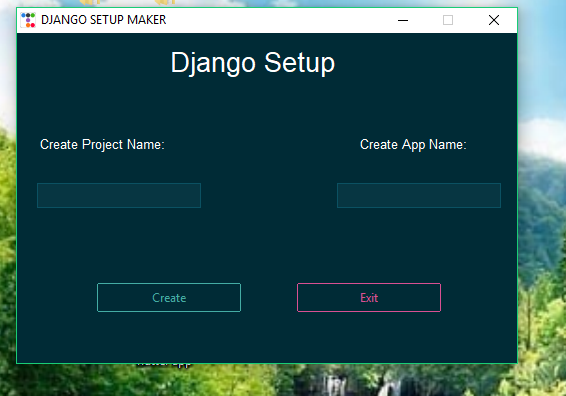
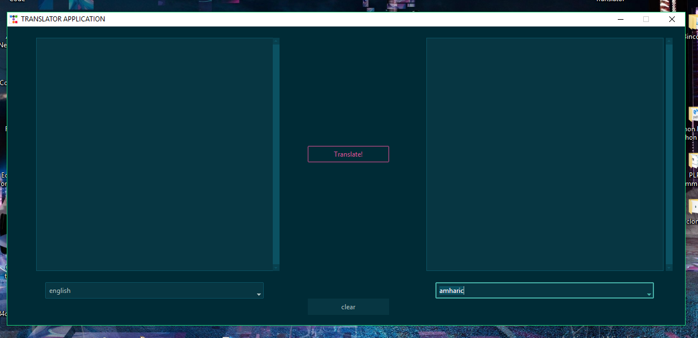
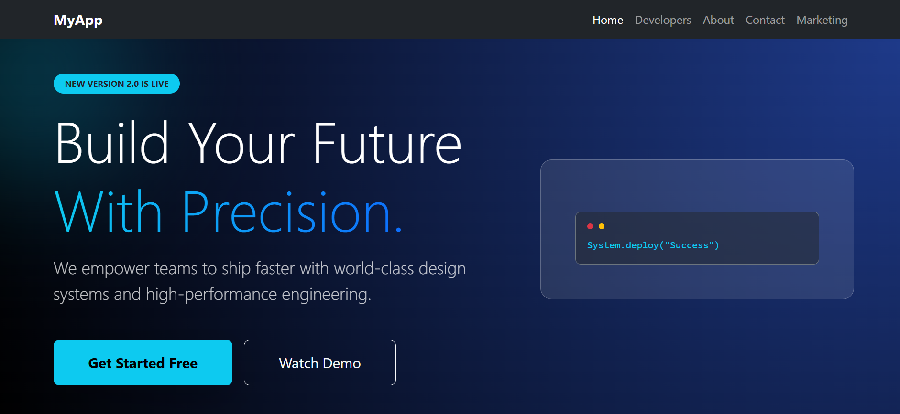
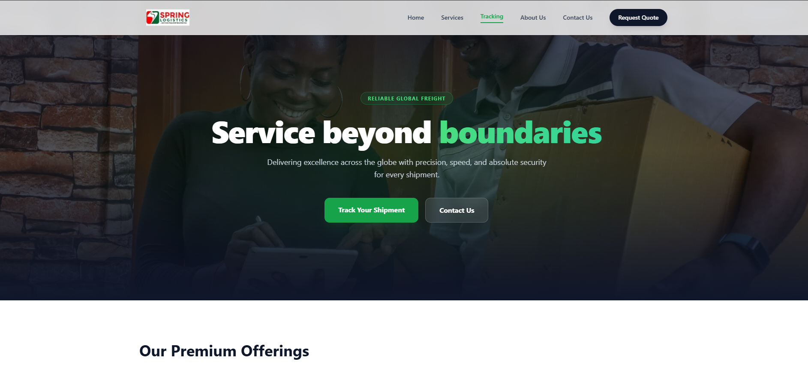

Featured Projects

Computer Village Parts Network
Django · Django REST Framework · JWT and Oauth Authentication · Swagger Documentation . Text-Speech Integration . Database Design . Redis
A private B2B platform designed to help laptop parts dealers in Computer Village quickly find and source laptop parts from other verified dealers. The system allows dealers to post requests for specific laptop parts and receive responses from other shops that have the requested item available. Once a dealer responds, the request owner can initiate a private conversation to negotiate pricing and complete the transaction offline. This platform is not a social media platform. It is a coordination tool built specifically for laptop parts dealers.

Mini Automated Grading System
Django · Django REST Framework · scikit-learn · JWT Authentication · Swagger
An API-driven grading system that automatically evaluates student answers using machine-learning techniques such as TF-IDF vectorization and cosine similarity. The system supports secure JWT authentication, exam submissions, and automated scoring with clear API documentation.

Django Google OAuth Authentication API
Django · Django REST Framework · JWT Authentication · Google OAuth · Docker · Docker Compose · PostgreSQL · Redis · Pytest · CI/CD (GitHub Actions)
A production-ready backend authentication system built with Django REST Framework featuring Google OAuth login, JWT authentication, automatic user creation, Redis-based rate limiting, full Dockerized deployment with PostgreSQL, and automated testing using Pytest with CI/CD pipelines via GitHub Actions.

CreatorLens 📊
Django · DRF · PostgreSQL · Redis · Celery · Celery Beat · Docker · Cloudinary · JWT
A scalable backend analytics platform for content creators that enables real-time engagement tracking, automated reporting, and high-performance data processing using Redis and Celery-based architecture.

Django Setup Automation Tool
A TkBootstrap-powered GUI app that automates Django project setup, creating virtual environments, installing dependencies, and structuring projects with one click.
View Project
Language Translator App
A modern TkBootstrap-based GUI app that translates text between 100+ languages in real time using the Google Translate API.
View Project
Animated Website from Figma
A pixel-perfect, animated website built from a Figma design, demonstrating strong CSS/Tailwind skills.
Islamic Website
A beautifully designed Islamic website, featuring elegant layouts, responsive design, and interactive elements. Provides visitors with easy access to Quranic resources, prayer times, and Islamic knowledge while showcasing modern web design techniques using Tailwind CSS.

React App Version 2.0
React · JavaScript · Bootstrap · Responsive Design
Build Your Future with Precision. This React application empowers teams and users with high-performance, responsive interfaces, modular components, and an intuitive design system. Version 2.0 delivers improved functionality and seamless user experience.

Logistic Website Frontend
The clean, responsive frontend design for a logistics tracking application, built with a modern framework.